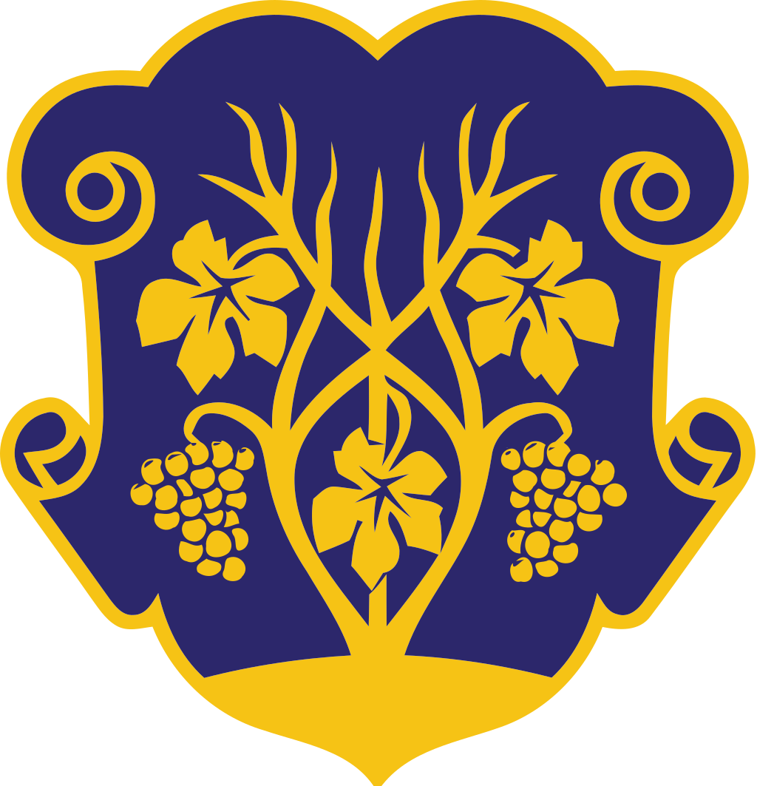
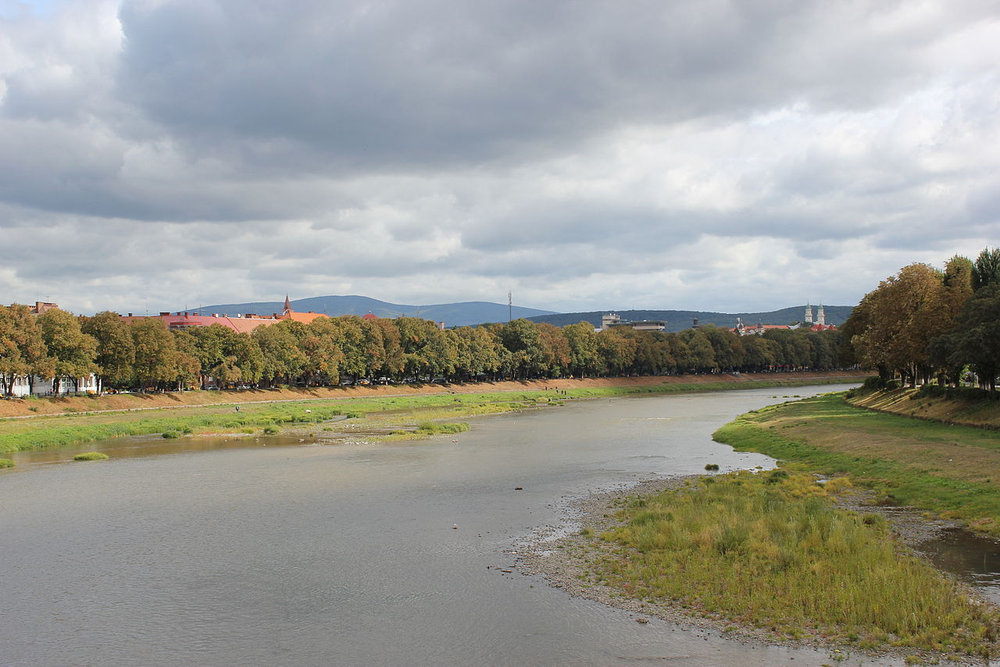
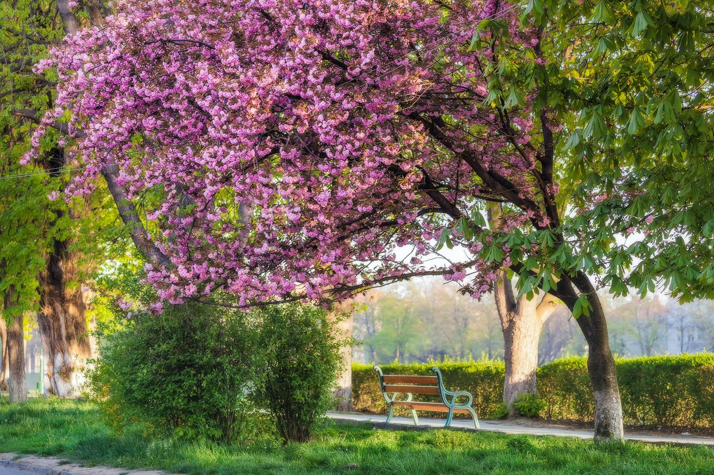

Етимологія
Повідомлення Аль-Ідрісі у 1154 р. є найдавнішим письмовим джерелом, в якому згадується Ужгород. Як свідчать історичні документи, місто з часу свого першого згадування фактично до кінця Першої світової війни мало лише одну назву: Унґвар (видозміни: Гункбар, Гунґвар, Онґвар). Саме слово складається з двох частин: «Унґ» і «вар». Що стосується другої з них, тут вчені одностайні, позаяк слово «вар» в угорській мові означає «укріплення, фортеця, замок» (в угорську мову воно потрапило з іранської). Також великі дискусії викликає етимологія слова «Унґ».
У 1860 році один з перших істориків міста Карой Мейсарош (1821—1890) стверджував, що «Унґ» нібито означає «швидкий». Тим часом для визначення вказаного поняття в слов'янських мовах вживаються зовсім інші слова. Один з дослідників Еде Маукс, спираючись на те, що серед кочівних тюркських народів вожді племен називалися «онґ», і оскільки, відповідно до історичних праць угорського автора Аноніма (поч XIII ст.) Арпад — один з вождів древніх угрів наприкінці IX — на початку X століть — захопив Ужгород, то і фортеця (місто) отримала назву «Онґвар» («Унґвар»). Однак, як з'ясувалося, Арпад мав титул «юлі» або «Дюли» (з чого пізніше виникло власне ім'я Дюла), а не «онґ». Не підтверджується й припущення Пала Ясої, що ця назва походить від імені посла східно-римського імператора Феодосія Онегеса, спрямованого до короля гунів Аттіли (V ст.). Іван Раковський вважав, що назва Унґвар більш слов'янська, ніж Ужгород, і походить від таких слів, як Уґ (Унґ), що означає Південь (річка Унґ (Уг словацькою) мовою — Уж, тече на південь) і слова «твар» (творити, твердиня, фортеця), з якого випала буква «т» і воно отримало форму вар. У першій половині XIX ст. видатний славіст Павел Шафарик (1795—1861) штучно з назви Унґвар утворив назву Угвар. З цієї назви пізніше була зроблена калька «Оуґгород». Паралельно з цим викладач Ужгородської духовної семінарії Андрій Балудянський (1807—1853) створив форму «Унґоград», переклавши угорське слово «вар» (замок, укріплення) на слов'янське «град», однак жодна назва не прижилася. У середині XIX ст. нарешті з'являється і назва Ужгород. Виникло воно під впливом підйому національних рухів руського населення краю, особливо в часи угорської революції 1848—1849 рр.. Кому належить авторство у створенні цієї назви, поки невідомо, проте існують уявлення, яким чином воно утворено. Замість елементу «Унґ» вжито слово «Уж», а угорське «вар» («замок, фортеця») перекладено слов'янським словом «город». Нова назва міста — «Ужгород» — у той час не прижилася.
Нею спорадично користувалися до кінця 1860-х років лише деякі з представників місцевої інтелігенції (наприклад, Олександр Духнович). Населення ж краю, як писав у 1869 році І. Раковський «з недорозумінням звертається до священиків з питанням. Що це за місто Ужгород, де воно?». Ця назва на той час не прижилася. Про неї згадали лише після Першої світової війни, коли Закарпаття відійшло до Чехословаччини і нова влада вирішила слов'янізувати назви міст та сіл краю. З того часу, за винятком короткого періоду (1938—1944), коли Закарпаття входило до складу Угорщини, офіційно вживається назва Ужгород.
Символіка
Герб Ужгорода — офіційний герб міста, затверджений рішенням Ужгородської міської ради від 14 червня 1990 року. Являє собою німецький щит на синьому полі якого зображено, як із землі ростуть три золоті виноградні лози, що перетинають одна одну, з трьома листочками і двома гронами винограду на них.
Виноградна лоза в символіці міста відома з 1635 року, коли місто використовувало печатку з малюнком виноградного куща з трьома лозами та двома гронами. Герб на печатці обрамлював напис: «Sigillum civitatis Ungvariensis». Кольорове зображення герба Ужгорода відоме з 1701 року
Водночас австрійські геральдисти XIX століття (К. Лінд, Г. Ґ. Штрель) подають герб Ужгорода в іншій кольоровій гамі: на червоному тлі з зеленої землі ростуть три зелені виноградні лози з двома золотими ґронами. Цікаво, що 1939 р. (користуючись, очевидно, працею Г. Ґ. Штреля як першоджерелом) саме в таких барвах герб Ужгорода (як один з елементів) відтворив у своєму проєкті «великого державного герба УНР» український геральдист у Празі М. Битинський
12 грудня 1905 року Міністерство внутрішніх справ Угорщини у своєму листі переслало в Ужгород офіційний опис герба: «Щит в стилі бароко, синього кольору, на якому із зеленої землі росте виноградний кущ з трьома виноградними лозами, з яких крайні посередині щита перетинають одна одну і з них звисає по одному грону, а з кожної з трьох лоз звисає по одному зеленому листку»
На будівлі міської лікарні в 1913 році був зображений герб, де лози й листя винограду були вилиті із золота. Саме така кольорова гама вважається «справжньою», тобто такою, яка відповідає первинному вигляду герба.
Географія та клімат
Рельєф та гідрографія
Місто розташоване майже на однаковій відстані від трьох найближчих морів: Балтійського, Адріатичного та Чорного (650—690 км), що робить його найбільш внутрішнім містом у цій частині Європи. Місто розташоване на висоті приблизно 120 м в передгір'ях Карпат на річці Уж (105 км в межах України). Територія міста становить 41,56 км². Протяжність міста з півночі на південь — 12 км, зі сходу на захід — 5 км. Найвища точка Ужгорода — гора Велика Дайбовецька — 224 м. Площа зелених масивів і насаджень становить 1574 га, крім цього, Ужгород оточений лісами. Значну частину площі міста становить правобережна частина (Старе Місто), яка дещо більша за лівобережну. Береги річки Уж пов'язують 7 мостів: 4 пішохідно-транспортних 2 пішохідні та 1 залізничний.
Клімат
Клімат помірно-континентальний, з жарким літом і м'якою зимою. Значно впливає на клімат міста захищеність Карпатами від холодних вітрів з півночі. За кліматичною класифікацією Кеппена — Гейгера клімат Ужгорода є морським
Найнижча середньомісячна температура повітря в січні (мінус 11,1 ° С) зафіксована в 1964 р., найвища (4,1 ° С) — у 1936 р. Найнижча середньомісячна температура в липні (17,6 ° С) спостерігалась у 1902 і 1979 рр., найвища (23,6 ° С) — у 1994 р. Абсолютний мінімум температури повітря (мінус 32,0 ° С) зафіксовано 9—10 лютого 1929 р., абсолютний максимум (38,6 ° С) — 15 липня 1952.
В останні 100—120 років середньорічна температура повітря в Ужгороді підвищилася приблизно на 1,0 ° С. Найбільше підвищення температури в першій половині року.
У середньому за рік в Ужгороді випадає 748 мм атмосферних опадів, найменше їх у лютому і квітні, найбільше — у червні та липні.
Мінімальна річна кількість опадів (443 мм) спостерігалась у 1961 р., максимальна (1134 мм) — у 1980 р. Максимальну добову кількість опадів (75 мм) зафіксовано у червні 1892 р.
У середньому за рік у місті спостерігається 156 днів з опадами; найменше їх (9) у жовтні, найбільше (18) — у грудні. Щороку в Ужгороді утворюється сніговий покрив, проте його висота незначна.
Відносна вологість повітря в середньому становить 73 %, найменша вона у квітні (63 %), найбільша — у грудні (84 %).
Природно-заповідний фонд
В Ужгороді багато парків та скверів, серед яких: ботанічний сад (загальнодержавного значення), 10 парків-пам'яток садово-паркового мистецтва, а також дві ботанічні пам'ятки природи й дві гідрологічні пам'ятки природи:
- Ужгородський ботанічний сад
- Боздоський парк, Липова алея, Палісадник обласної лікарні, Палісадник університетської бібліотеки, Палісадник хімкорпусу держуніверситету, Партерний сквер, Підзамковий парк, Рокарій ЗАТ «Закарпатліс», Сквер міськлікарні, Сквер Т. Масарика
- Кипарис болотний, Ясен Масарика
- Джерело № 1, Свердловина № 221
- Завдяки м'якій зимі, в Ужгородському ботанічному саду росте дерево секвоядендрону гігантського, вік якого близько 100 років.